来源：https://b121w2zgwyx.feishu.cn/docx/FduZdzK9boNLqPx5NKOcmWoNnzg
本文耗时两天打造，想要一遍走通需要花点时间，建议找个专注的时间开搞！
这不仅是个免费使用claude3.5的方案，也是一个超级智能体方案，绝对值得一试！
最近Manus真是赚足了眼球，然而我还是没有邀请码...
不过，我看了Manus一些案例，大多数其实就是调用浏览器查询数据，调用代码工具写代码，最后做成网页给你看。
其实核心就是编程能力来为我们解决问题。
可是要说编程，我们的AI编程工具可是强项。
所以我就在想，理论上用AI编程工具，加上搜索然后让它写代码分析实现，最后再写个html页面给我就行了。（ps：manus应该不止表面看到的这么简单，我只是探讨一种这一类实现的替代方案，反正没有更好的情况下，这是一个不错的方案！）
于是我去搜索了一下，发现还真有挺多人这么干的，于是我经过研究，鼓捣了这么一个替代方案，废话不多说，开整
vscode是一个编程工具，这个是这套方案的基础，因为后续用到的插件其实都是在这个工具上安装，如果已安装请跳过
vscode下载地址如下：https://code.visualstudio.com/Download
直接下载安装就是了，由于默认安装之后，一般是英文，我们可以安装一下中文扩展，如下图点开扩展，输入chinese，然后安装一下插件
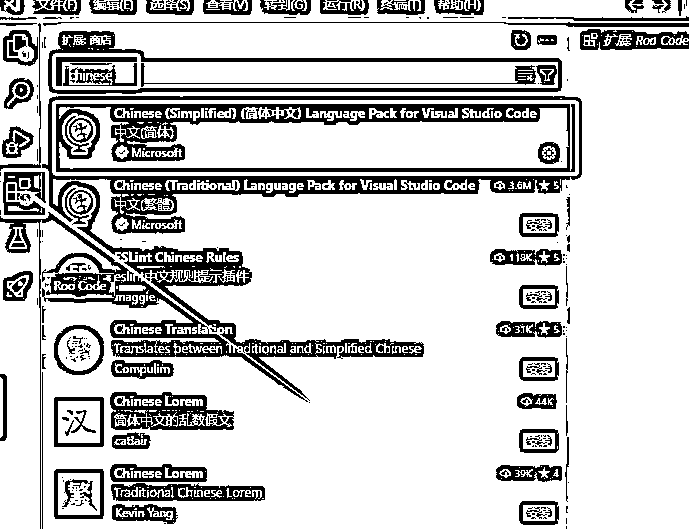
安装完插件，还要应用一下按下快捷键 ctrl+shift+p ，在弹出的输入框中输入 language，然后点击 configure display language
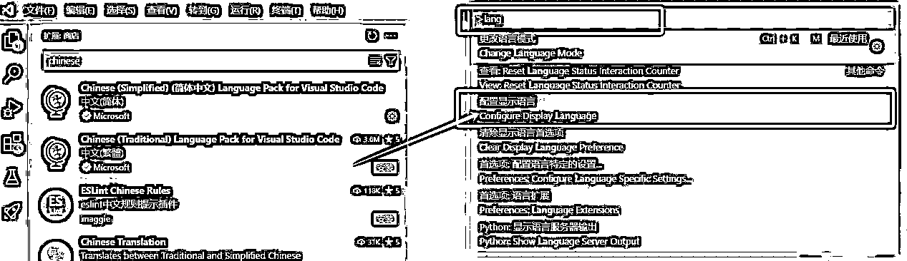
随后，找到中文简体，选择，然后重启vscode就可以了。
Roo-Code原来叫Roo-Cline 是 cline的一个分支，现在做的很不错，可以用来AI编程，如果用不上cursor的，可以考虑用这个替代。为什么要用Roo-Code呢？主要是因为它支持MCP，可以配置很多辅助工具，这个我稍后会讲到。
同样的，进入扩展插件，输入Roo Code，然后选择哪个跟火箭一样的玩意儿，进去点击安装
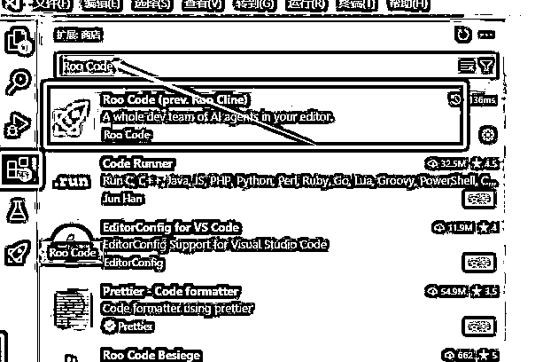
copilot是GitHub出的编程工具，其实也可以直接用它来编程，但我感觉没有Roo-Code好用，那为什么还要用copilot呢？主要是因为copilot支持Gpt4.0和Claude3.5的调用。免费版copilot支持免费2000次的代码补全；而即使是升级专业版，也只需要10美元，比windsurf和cursor都要便宜。对于我这个重度开发者来说，是一个不错的选择。
这个安装也很简单，继续进入扩展里面，输入 copilot，然后安装一下
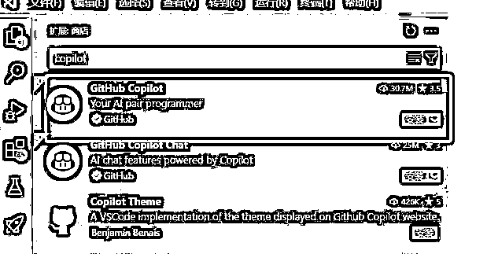
安装完成之后，点击右下角这个标志，然后点击允许，跳转GitHub登录，需要用到GitHub账号，没有的需要注册一下
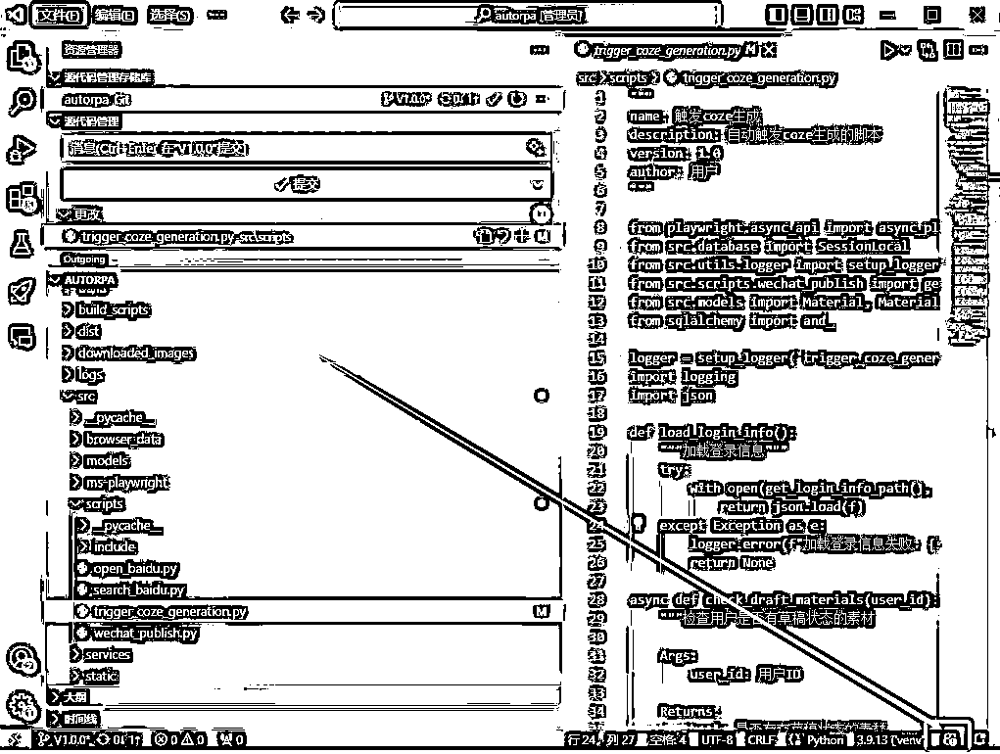
对了，如果是最新版本的vscode，可能位置不一样，按钮在这个地方：
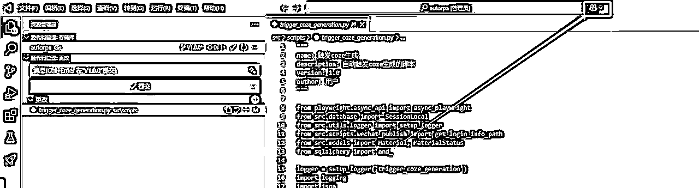
大家根据自己的情况，找到按钮点击，然后在GitHub页面登录，如果已经登录就会出现如下页面，点击打开跳回vscode就可以了：
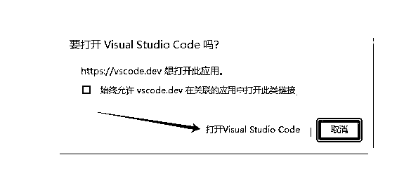
到上面为止，所有工具就准备完毕了，接下来先把Roo-Code跟copilot里的模型打通；
找到我们安装的Roo-Code，然后点击设置：
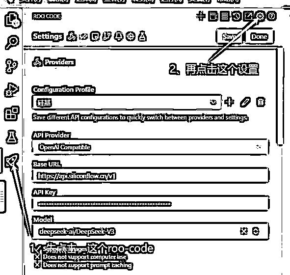
接着按如下方式选择，API Provider 选择VS Code LM API，接着下面的大模型就能看到copilot提供的大模型支持了，选择一个你想要的，我这里选择了claude3.5因为它的代码能力比较强
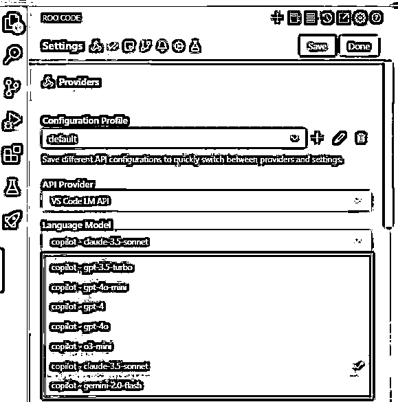
为了让AI最大的全球掌控操作，我们把下面的选项都勾上
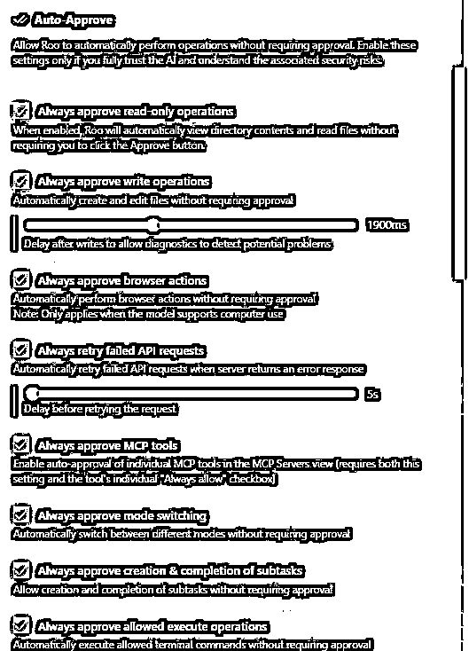
然后点击一下save保存，点击Done关闭设置页面
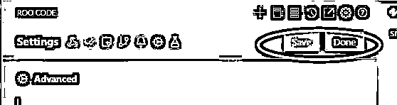
最后，我们来测试一下Roo-Code；
我们打开一个文件夹作为我们的工作区，待会儿找文件好找
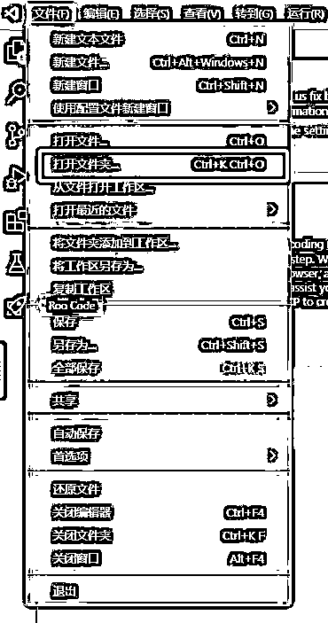
接着我们测试第一个任务，我让它分析一下2024年的房价走势，并整理成报表用html页面展示
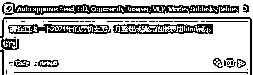
接下来你会看到，AI在自行写代码制作网页，过了一会儿，它就跟我说做完了
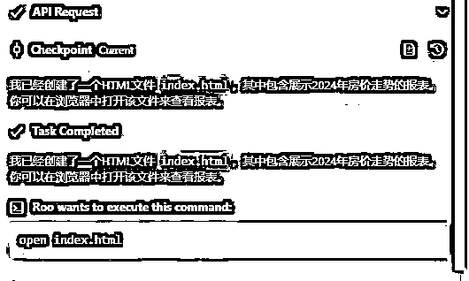
然后我们打开网页看一下，做的不错嘛！
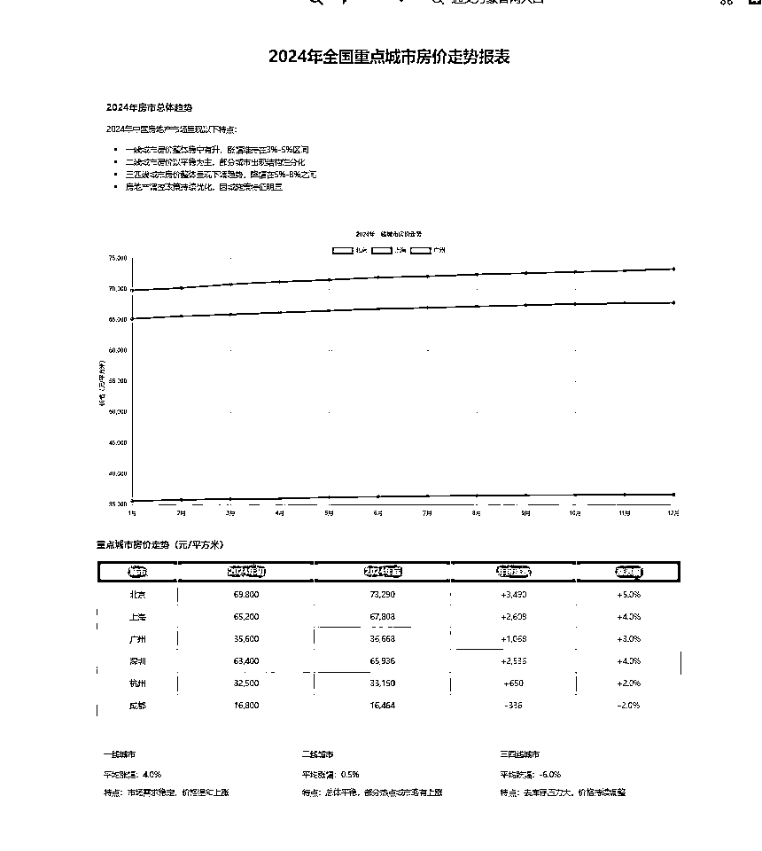
假如你认真观察，你就会发现，上面的网页其实没有用到搜索工具，数据都是大模型里直接给的，这种准确性存疑。如果我们需要更加准确的数据，我们应该接入搜索工具；让Roo-Code拥有访问互联网数据的能力。
那么怎么做呢？就是要用到MCP了，什么是MCP呢？
MCP（Model Context Protocol，模型上下文协议）是一种开放标准协议，旨在实现大型语言模型（LLM）与外部数据源和工具之间的无缝集成。
通俗点说你就把这个理解成USB接口，然后你想要用什么工具，只要按照usb接口标准开发，即插即用。
对了，现在cursor和windsurf也都支持Mcp了，搞懂了都一样。
那不会是要我们做开发吧？小白不懂怎么办？
放宽心，Roo-code内置了mcp成创建，可以直接让AI帮忙实现，接下来，我们一步一步实现，今天先带大家做2个比较有用的mcp服务
1、浏览器工具
2、图片生成工具
发现没有，其实通过各种工具的集成，我们vscode其实就变成一个强大的智能体了。
由于正常情况下我们自己做搜索的话，是要接入搜索api服务的，而且绝大部分的搜索api是要收费的，而一些免费的，内容可能又不理想。
因此，我就想到了我们可以直接让AI模拟浏览器去访问网站搜索，而这不就是manus也经常用的吗？
其实，单纯做搜索的话，用api的方式会更稳定一些，之所以想要做模拟浏览器的这套方案，是因为一旦这一套方案打通了，后面你编程让AI写各种自动化脚本，将手到擒来，为AI和自动化增加无限可能！！
让我们继续吧！
github上找到mcp-playwright工具，地址：https://github.com/executeautomation/mcp-playwright
这个是一个浏览器自动化工具，我们找到安装指示
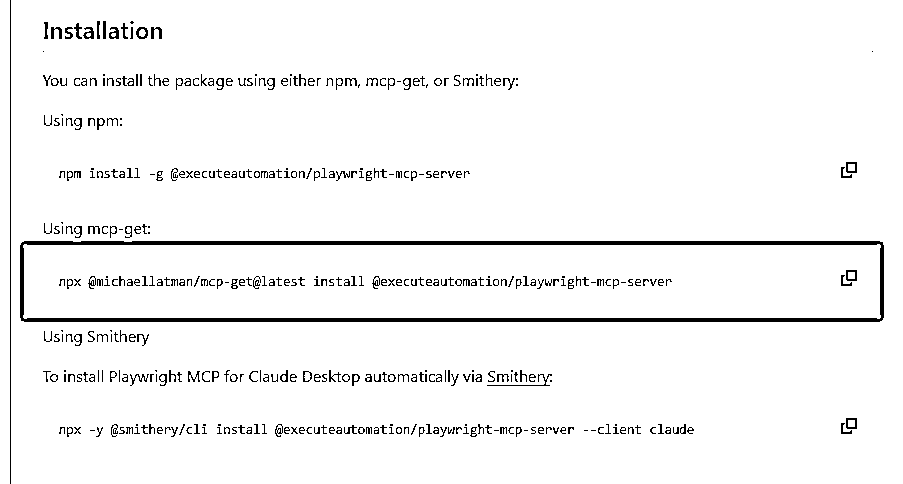
直接把这个扔到Roo-code让它帮忙安装
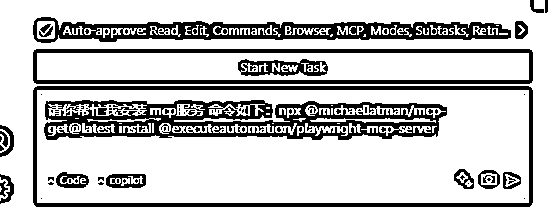
注意了！使用windows系统的朋友要避坑的地方，windows系统使用npx安装会经常出问题我倒腾了四五个小时没搞定。
最终通过上网搜索，才发现，原来目前windows系统用npx就是会有各种问题，于是最后找到了一个关于windows系统安装mcp的方案：https://github.com/trevorwilkerson/Windows-MCP-Server-Installation-Verification-Guide
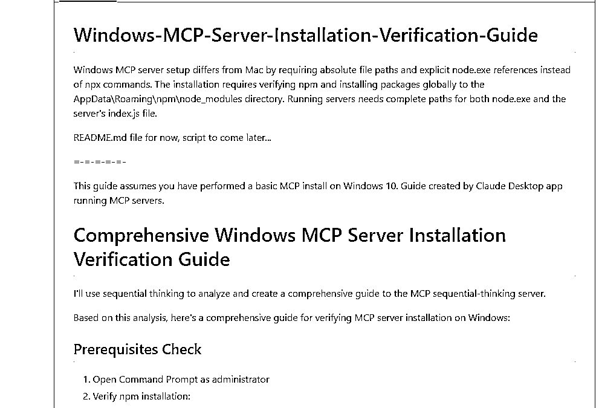
不用头疼英文，大体就是说windows系统安装mcp需要特殊处理一下路径啥的，我们不用管，把这个readme内容全部复制，丢给Roo-cline
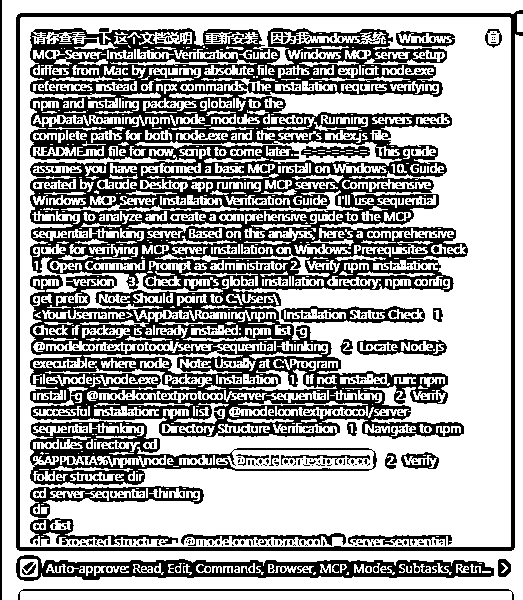
接下来基本只要它提示是否需要执行命令，无脑点击 runCommand 就行了，最后出现下面信息，安装成功
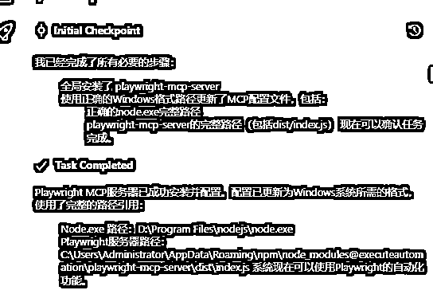
接着我们切换到MCP_Server配置查看
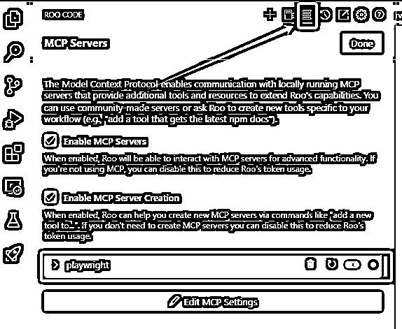
出现这种情况说明确实安装成功了！
我让它用百度搜索热点新闻，然后重新整理个网页给我，首次执行的时候，需要注意一下Always allow选项，它是没有选中的，我们要选中一下，之后就不需要询问我们，它就能自动执行了。
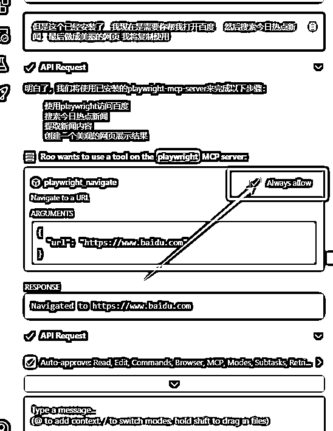
接下来等待Roo-Code执行，它会自动去打开网站，并且分析网站源码，然后模拟点击，找到需要的内容。
如果单纯从搜索内容的功能上看，这个执行过程过于繁琐了，因为它还要分析源码做模拟点击之类的操作。不如api一步到位完美。还是那句话，如果单纯做搜索内容，用api搜索工具会更好，比如接入必应搜索。
好了，回到主题，最终Roo-Code执行完毕
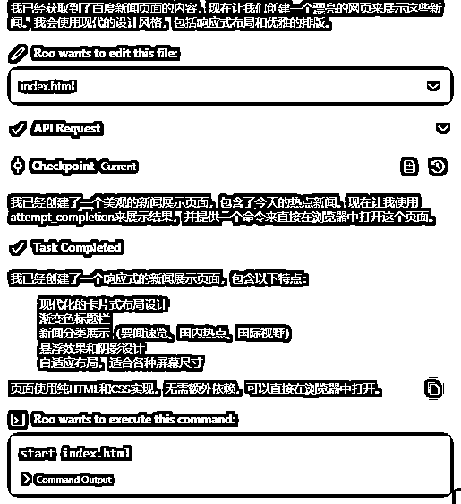
直接执行 Run Command 然后Roo-Code会自动打开做好的网页，以下是效果：
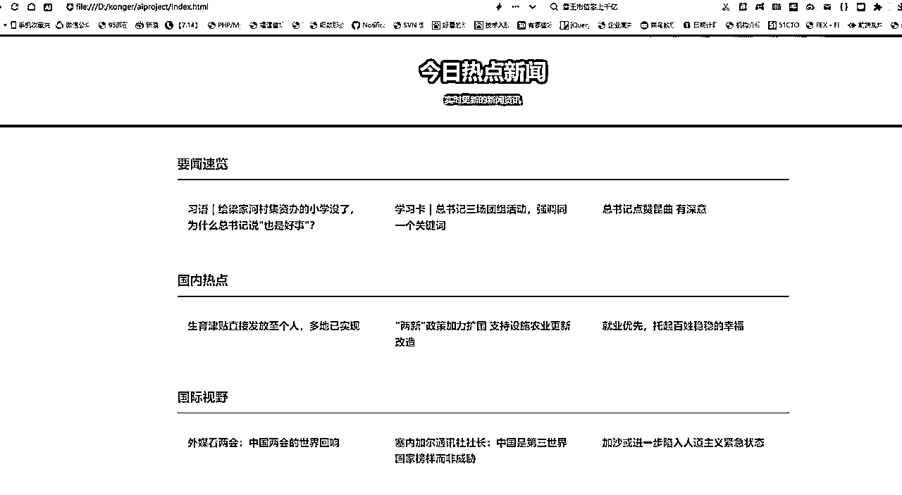
浏览器自动化走通，其实好多东西，都可以试着做一做的，下面我再举个用例
为什么要用浏览器自其实经常需要让AI参考一些内容，比如前面需要它读取说明的时候，如果都用复制黏贴效率将会很低，因此链接读取应该是AI的必备技能。但是我测试了其他读取网页的mcp工具，例如fetch。让它读取头条和微信文章的时候，不是因为robot协议问题，就是因为登陆问题，无法获取内容。
经过测试，发现还是模拟浏览器自动化最好用，来看看用法吧
接下来我来举个例子
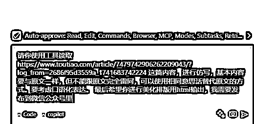
等待AI帮我们制作完成
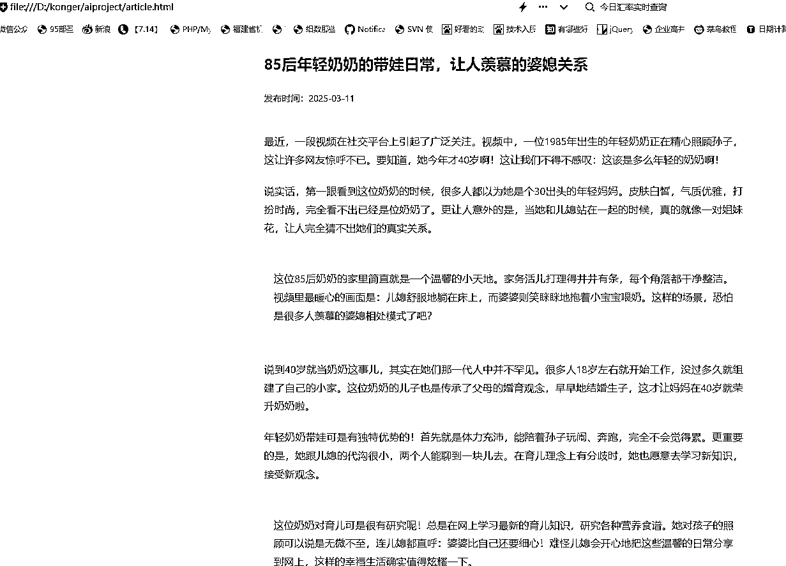
其实通过浏览器工具加上编程软件，可以解决非常多的事情了。各种爬虫，自动化什么的。构建将轻松无比。
由于我们的编程软件不支持图片生成，假如我们遇到需要配图的情况，比如网页设计啊什么需要一些示例图片什么的，又要去找图就比较麻烦，因此接入图片工具是个好主意。
图片生成工具的安装，刚好展示的是mcp的另外一种安装方式，就是由Roo-Code自己创建工具，而不是用现成的去安装。
我们打开这个网站https://docs.siliconflow.cn/cn/api-reference/images/images-generations
这个是硅基流动提供的一个免费的图片生成模型。我们找到CURL这里复制里面的内容到Roo-Code里面，对了
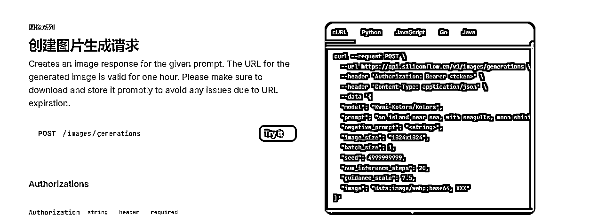
token的创建，登录硅基流动之后，在这个地方
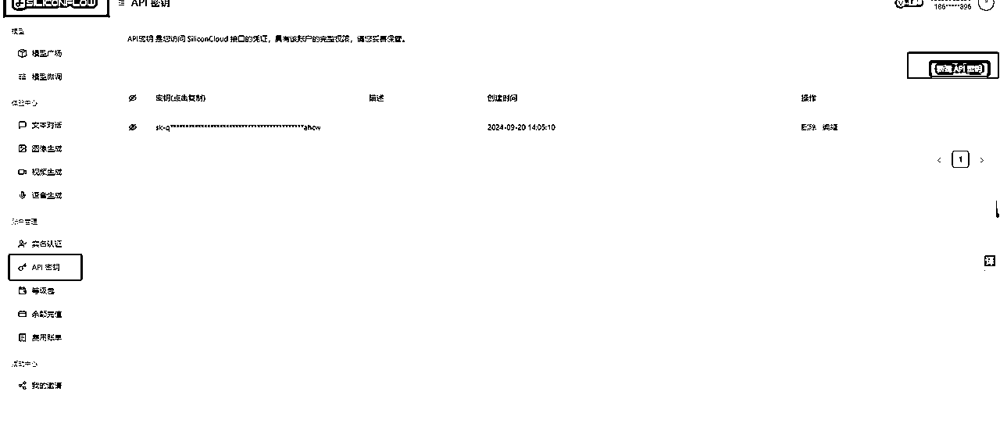
将替换后的完整内容，复制到Roo-Code里面，参照我的提示写上：请你根据以下 curl请求，创建一个图片生成MCP工具
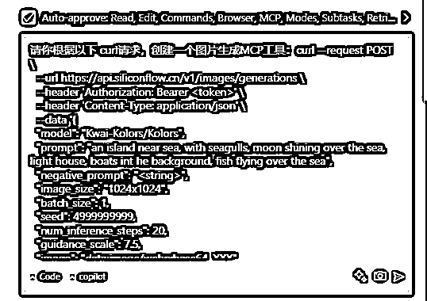
开始创建工具创建过程，要注意有个安装确认的地方，需要手动输入一下 Y，继续
还有这几个选项，默认回车就行了
有几个踩坑点，就是windows系统 很难一次性成功，一直会有路径问题，要调试老半天。如果有朋友们实在调不通的，可以找我拿一下我做的源码，环境差不多的话可以直接用，不顺利的话也可以给AI参考。
在Roo-Code下面输入以下提示词开始建站：
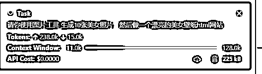
然后工具就会自行生成图片，最终将图片放入网页做成网站
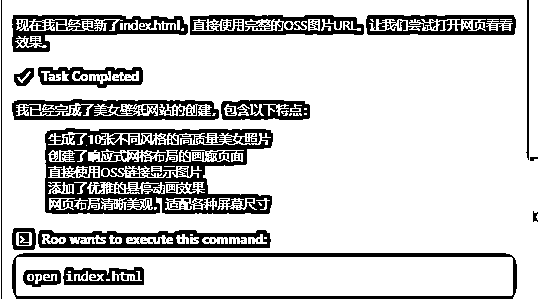
好了我们打开看一下，哈哈，免费的模型生成图片就是丑呀..
但是打通了这个环节，我们如果接入comfyui 的接口，那就是各种图片都没问题了。
接下来我来尝试一下用这个来写文章和配图，看看怎么样，输入如下提示词：
等待AI生成完毕，查看一下效果，还是挺不错的：
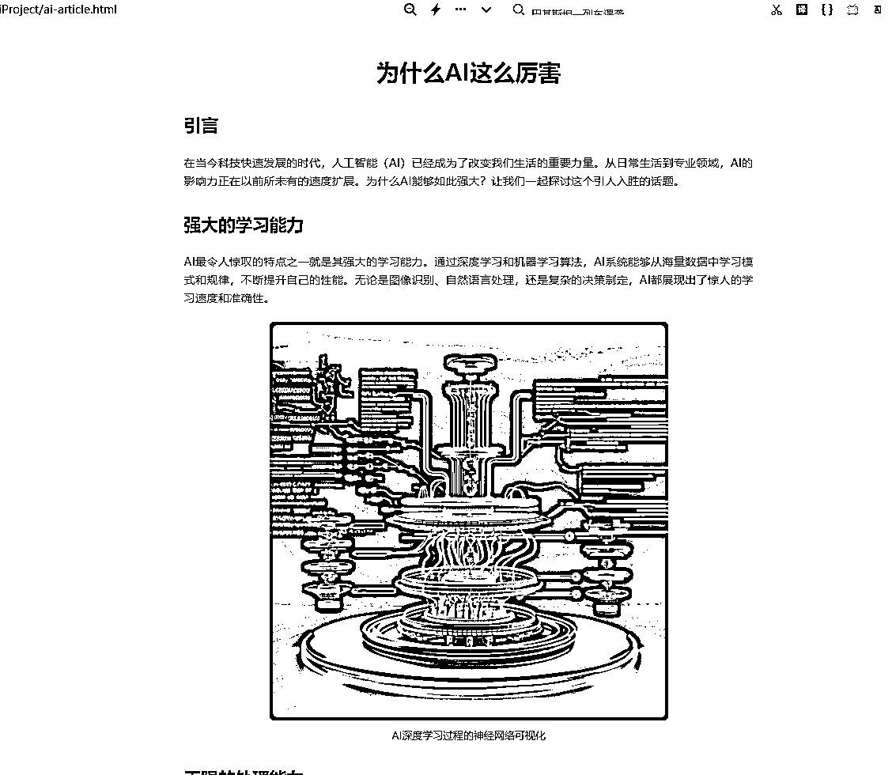
这些只是简单示例，更多的优化和更多的使用场景，等着你们开动脑筋探索起来。
比如，如果接入PPTapi 是不是就能自己生成ppt了？
比如，接入视频生成api，是不是就可以一键生成视频了呢？
真的！无限可能；而且应该会越来越完善。